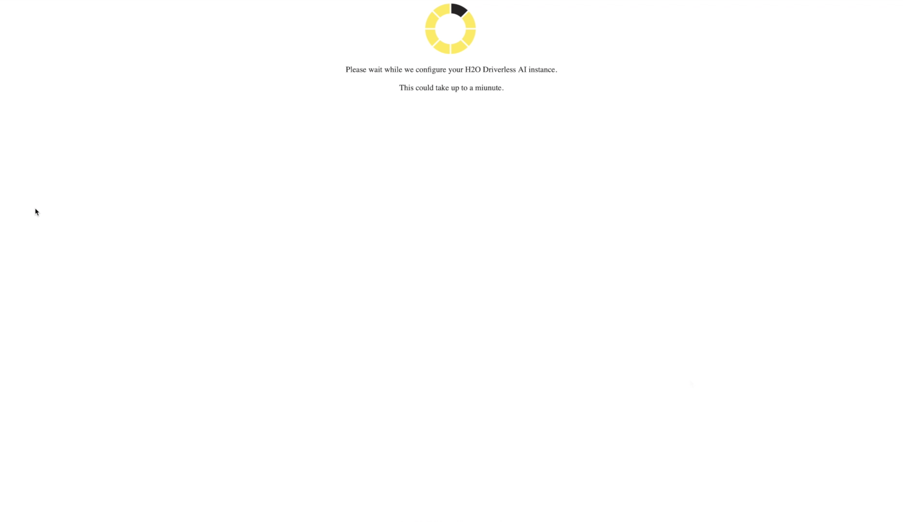
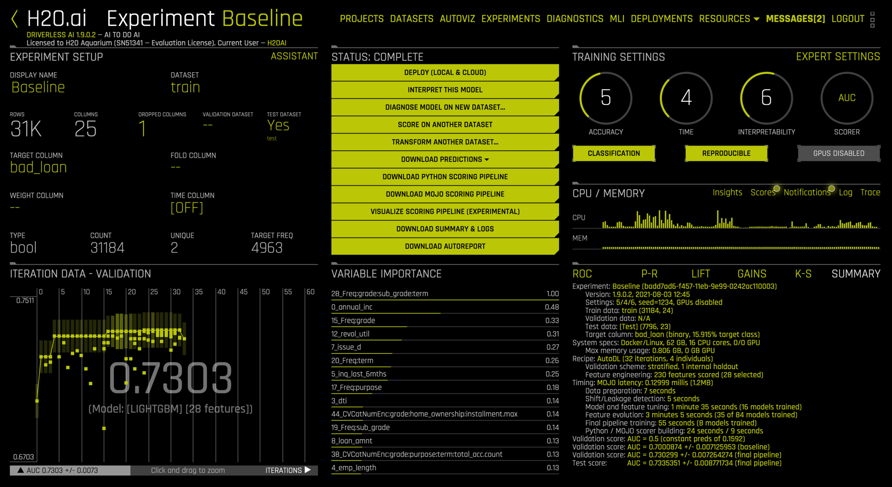
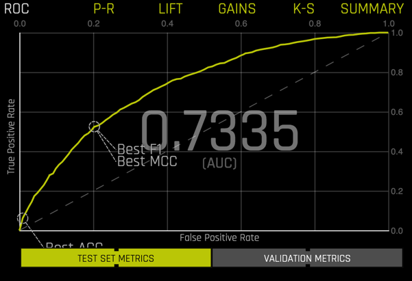
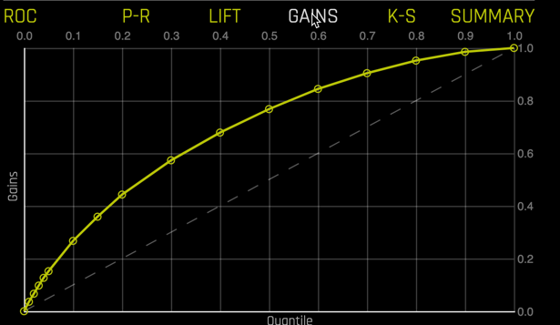
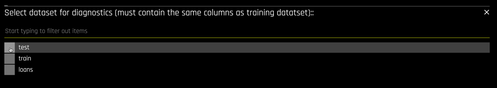
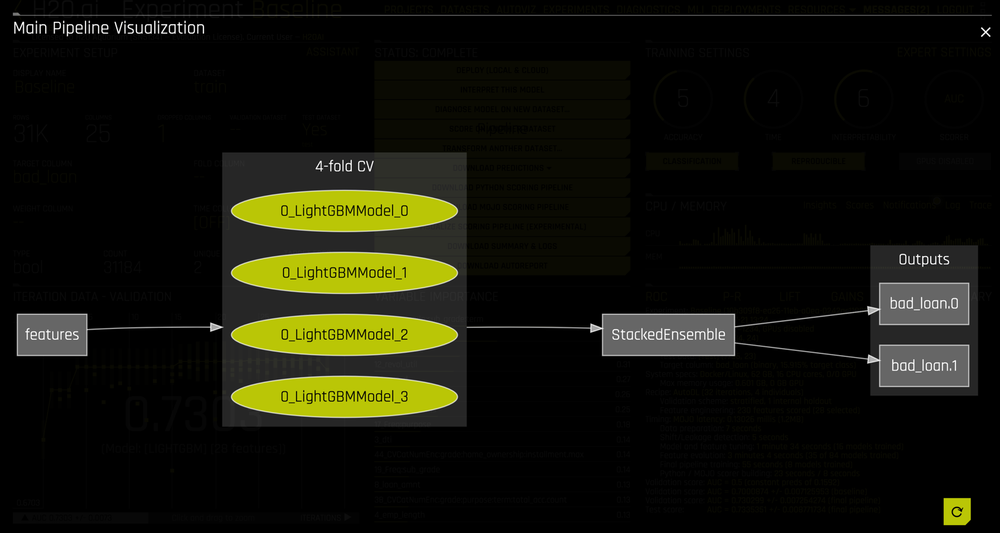
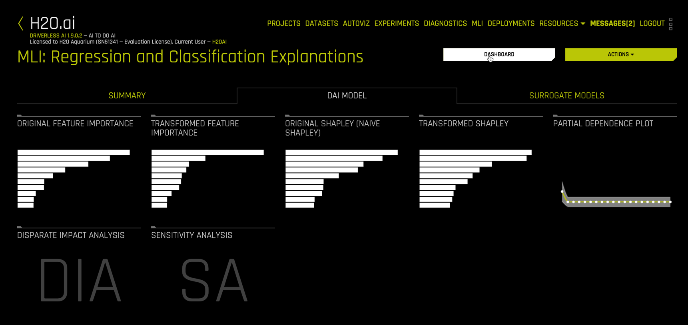
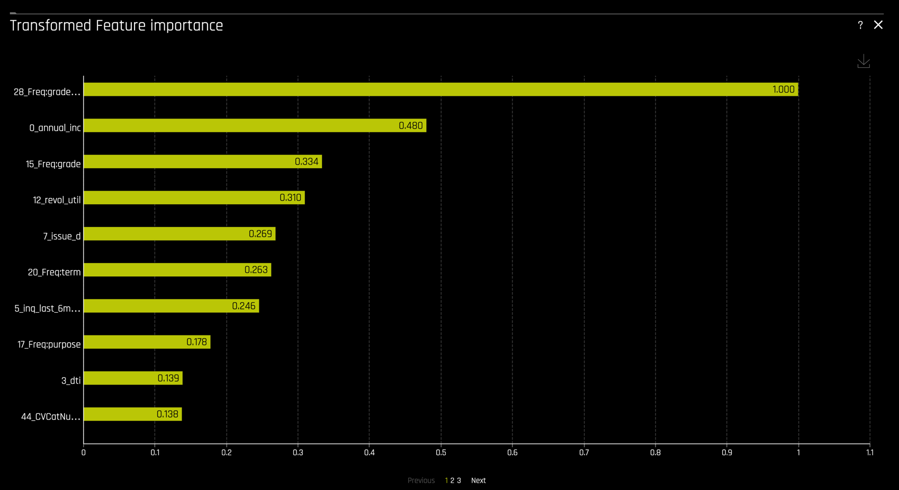

H2O Driverless AI is a supervised machine learning platform leveraging the concept of automated machine learning. Supervised machine learning is a method that takes historic data where the response or target is known and build relationships between the input variables and the target variable. Driverless AI automates most of difficult supervised machine learning workflow such as feature engineering, model validation, model tuning, model selection, and model deployment. Modeling pipelines, which are produced from H2O Driverless AI, can exported as standalone scoring artifacts to power your AI/ML use case.
This tutorial presents a quick introduction to the Driverless AI platform via Snowflake Partner Connect.
We will use a dataset from LendingClub.com to build a classification model to help us predict the likelihood a LendingClub.com borrower will default on their loan. LendingClub.com is an established online loan marketplace that funds personal loans, commercial loans, funding of medical procedures, and other financing needs. The data consist of 25 columns and approximately 39,000 rows, with each row corresponding to a customer. Here is preview of the data:


Note that the dataset consist of numerical columns (loan_amount, installment, emp_length, dti, etc.), categorical columns (term, home_ownership, verification_status, purpose, etc.), and a text column (desc). Our target variable is bad_loan which is a Boolean with values True and False, thus this will be a binary classification problem.
We will use Snowflake and Driverless AI to:
- Import the data from Snowflake
- Explore the data using summary descriptive statistics and automated visualizations (AutoViz)
- Build a predictive model using an evolutionary algorithm for automatic feature engineering and model optimization
- Measure the model through diagnostics
- Understand the model through MLI (machine learning interpretability)
- Deploy the model into production in a Snowflake system
Prerequisites
- A Snowflake Account deployed in AWS (if you are using an enterprise account through your organization, it is unlikely that you will have the privileges to use the
ACCOUNTADMINrole, which is required for this lab) - A H2O trial license key
- SnowSQL installed (Snowflake's CLI tool)
- Past experience running and executing queries in Snowflake
- A basic understanding of data science and machine learning concepts
What You'll Learn
- How to use Snowflake's "Partner Connect" to create a Driverless AI instance
- How to use Driverless AI to build a supervised learning classification model
- How to deploy the finished model pipeline as a Snowflake Java UDF
The first thing you will need to do is download the following .sql file that contains a series of SQL commands we will execute throughout this lab.
At this point, log into your Snowflake account and have a clear screen to start working with. If you have just created a free trial account, feel free to minimize or close any hint boxes that are looking to help guide you. These will not be needed for this lab as most of the hints will be covered throughout the remainder of this exercise.

To ingest our script in the Snowflake UI, navigate to the ellipsis button on the top right hand side of a "New Worksheet" and load our script.

Snowflake provides "worksheets" as the spot for you to execute your code. This lab assumes you have already run a few queries in Snowflake before. Therefore, we are going to execute a series of commands quickly, so we get the data in tables and continue to the more interesting part of the lab of building and deploying models. The .sql file that you upload should look like this:
USE ROLE PC_H2O_ROLE;
USE DATABASE PC_H2O_DB;
USE SCHEMA public;
USE WAREHOUSE PC_H2O_WH;
CREATE OR REPLACE TABLE loans (
id INTEGER,
loan_amnt INTEGER,
term String(1024),
installment Real,
grade String(1024),
...)
...
Note: before you execute the SQL statements, please proceed to the next section to connect to H2O and launch your Driverless AI instance.
Snowflake's Partner Connect feature allows you to seamlessly get started with partner tools and manages most of the connection details for you to get up and running as quickly as possible.

Go ahead and click on the "Partner Connect" application. This should take you to the following screen where you will see many of the Snowflake partners, and through a simple method of setting up an account and integration, allow you to quickly move data into a partner tool.

To be able to continue test out partner applications, in our case H2O, we need to promote ourselves to the ACCOUNTADMIN role. This is an out of worksheet process, and therefore isn't a command for us to run. We need to do this one manually.

Once you have completed this step, go ahead and click on the H2O application. This will present you with a screen to connect to H2O. It will outline a number of Snowflake objects that will be auto-created. For the purposes of this lab, we have already created the snowflake objects that we will need, so you can press "Connect" .

This creates a partner account which you can immediately Activate

You next need to accept the H2O Terms and Conditions for the Trial Agreement

and wait while your H2O Driverless AI instance is configured and launched.

Driverless AI Interface
Your brand new Driverless AI instance looks like

A summary of the information and views we will cover in this tutorial include:
- H2O.ai information: This displays the version (Driverless AI 1.9.0.2), the license owner and status, and the current user (H2OAI).
DATASETS: A view for importing, listing, and operating on datasets.AUTOVIZ: The Automatic Visualizations of data view.EXPERIMENTS: The view where we build and deploy predictive models.DIAGNOSTICS: Model diagnostics view.MLI: Machine learning interpretability view, information to help us understand our models.RESOURCES: A pull-down menu for accessing system information, clients, help, and other resources.
Now let's setup the database and warehouse in Snowflake, and create a table to use for the lab.
In the Snowflake worksheet, you have previously loaded a .sql script. The SQL commands in this script will import the Lendingclub dataset and create a table called loans. This table will be used with H2O Driverless AI to train and deploy a machine learning model.
To execute the entire .sql code, which contains 9 different statements, all we need to do is click on the "All Queries" button next to blue "run" button at the top left of the worksheet and then press "run". You should see the "run" button has a "(9)", meaning it will execute all 9 commands in the uploaded file.
From the empty Datasets view, click the Add Dataset button and select the SNOWFLAKE connector:

This launches the Make Snowflake Query form.
 Enter into the form:
Enter into the form:
- Database
PC_H2O_DB - Warehouse as
PC_H2O_WH - Schema as
PUBLIC - Name as
loans.csv - Username and Password with the credentials you used at signup
- File Formatting Parameters as
FIELD_OPTIONALLY_ENCLOSED_BY = '"'note: the quotation marks are single double single - SQL Query
SELECT * FROM LOANS
Then click the CLICK TO MAKE QUERY button. This imports the data into the Driverless AI system.

The dataset is now available for next steps in Driverless AI

Right click the loans dataset to get details.

The Dataset Details view is a quick way to inspect the dataset columns, see their storage type (integer, string, etc.), get summary statistics and distribution plots for each column.

In more advanced usage, you can edit the data type interactively

Scrolling to the right, inspect the bad_loans column, our target variable.

The target bad_loans is Boolean with 38,980 observations and has a mean value of 0.1592. This means that 15.92% of the customers (rows) in this dataset have a loan that was not paid off.
Clicking the DATASET ROWS button on the upper right yields a spreadsheet format.

This is helpful in understanding the layout of the data. A quick inspection of your dataset using Details is a good practice that we always recommended.
Autoviz in Driverless AI automatically creates a variety of informative interactive graphs that are designed for understanding the data to be used in building a predictive model. Autoviz is unique in that it only shows the graphs that are applicable for your data based on the information in your data.
Right click the dataset name and select VISUALIZE to launch AutoViz

The available visualizations for the loans data are shown below.

Selecting the SKEWED HISTOGRAMS section, for example, yields a series of histograms on only the columns that are sufficiently skewed. We show one below for the credit_length column.

Clicking the left and right navigation arrows allows you to inspect additional variables, ordered by their skewness.
Close the SKEWED HISTOGRAMS display and scroll down to see RECOMMENDATIONS.

Selecting RECOMMENDATIONS produces

The philosophy underlying automatic visualizations is to make it easy for the data scientist to quickly understand their data fields, but it does not make decisions for the data scientist.
There are a number of additional useful graphs that can be navigated to fully understand your data prior to modeling.
Splitting data into train and test sets allows models to be built with the train set and evaluated on the test data. This protects against overfit and yields more accurate error estimates. To use the Dataset Splitter utility, right click the dataset and select SPLIT

Name your train and test splits, then select a split ratio (here we use 0.8).
 For a time series use case, enter the time column. If your data have predefined folds for k-fold cross validation, enter the fold column. A seed is available for reproducibility. Select the target column
For a time series use case, enter the time column. If your data have predefined folds for k-fold cross validation, enter the fold column. A seed is available for reproducibility. Select the target column bad_loan

The data type of the target column determines the splitting algorithm. For classification problems, stratefied random sampling is used. For numeric target columns, simple random sampling is used.
Click SAVE to create the datasets.

The train dataset has around 31,000 rows and the test dataset around 8000 rows.
We use the term Experiment in Driverless AI to refer to the entire feature engineering and model evolution process. Instead of fitting one model, we are fitting many and using a "survival of the fittest" approach to optimize features and model hyperparameters. The result is a combination feature engineering-modeling pipeline, which can easily be investigated and promoted into production.
Set up an Experiment
We start an experiment from the Datasets view by clicking on the line corresponding to the train dataset and selecting PREDICT from the dropdown menu

This opens the following form for configuring an experiment.

The fields are
- (Optional) Name your experiment. This is especially helpful for leaderboards in
Projects. - The prefilled training dataset.
- (Optional) Select columns to drop from modeling.
- (Optional) Select a validation dataset. Setting this option will enforce a train-validate split throughout the experiment.
- (Recommended) Select the test dataset. You should always have a holdout test dataset to evaluate your model!
- Select the target column. This option is flashing so you will not miss it.
- (Optional) Select a column containing fold numbers. This is used where folds for k-fold cross validation have already been defined.
- (Optional) Select weight column.
- (Optional) Select a time column. This switches Driverless AI into a time-series mode, where specialized data, feature engineering, and model settings are enabled.
For our experiment, enter "Baseline" as the display name (#1). Next select the TEST DATASET file test (#5). The desc column contains a written explanation from the customer describing the reason for requesting a loan. Although Driverless AI has extensive NLP (natural language processing) capabilities, we omit them in this baseline model. Thus using DROPPED COLUMNS (#3), select desc:

Next select bad_loan as the TARGET COLUMN (#6). You will have to scroll down, since bad_loan is the next-to-last variable in the dataset

After selecting the target variable, Driverless AI analyzes the data and experimental settings and prefills additional options:

These include
- Target variable status
- The
ACCURACY/TIME/INTERPRETABILITYdials which range from 1 to 10 and largely determine the recipe for the experiment. - The
CLASSIFICATION/REPRODUCIBLE/GPUS DISABLEDclickable buttons. - The
SCORERused in model building and evaluation. EXPERT SETTINGSfor fine control over a vast number of system, model, feature, recipe, and specialty options.- A detailed settings description.
LAUNCH EXPERIMENTto run the experiment defined by dial settings, scorer, and expert settings.
For our experiment,
- The target variable is
bool(Boolean) with 31,184 observations, 4963 of which are equal to 1 (#1). TheCLASSIFICATIONbutton (#3) is enabled by default because the target is Boolean. - The
ACCURACYdial is set to 5. Higher values of accuracy are more computationally intensive. The description under (#6) shows thatACCURACYimpacts how features are evaluated (model & validation strategy) and what form the final pipeline will take (individual models vs. ensembles and validation strategy). - The
TIMEdial is set to 4. Higher values ofTIMEallow for longer feature evolution.TIMElevels also include early stopping rules for efficiency. - Note: Higher values of
ACCURACYandTIMEdo not always lead to better predictive models. Model performance should always be evaluated using a holdout test data set. - The
INTERPRETABILITYdial ranges from 1 (least interpretable = most complex) to 10 (most interpretable = least complex).INTERPRETABILITYset to 7 or higher enable monotonicity constraints, which significantly increases model understanding.
Click on the REPRODUCIBLE button to enable reproducibility. This may be important for regulatory reasons or, as in our case, for educational purposes. Also select AUC as the scorer (#4)

Clicking on EXPERT SETTINGS (#5) exposes an immense array of options and settings

This gives the expert data scientist complete control over the Driverless AI experience, including the ability to customize models, feature transformers, scorers, and data using CUSTOM RECIPES. Select CANCEL to exit out of the expert settings screen.
Run Experiment
Before launching the experiment, your settings should look like the following.

Click LAUNCH EXPERIMENT to commence. The Driverless AI UI now includes a descriptive rotating dial in the center with live monitoring displays for model evolution, variable importance, resource usage, and model evaluation.

To get more detailed resource monitoring, go to RESOURCES in the menu and select SYSTEM INFO.

The System Info view shows hardware usage and live activity monitoring of individual CPU cores.

Clicking CLOSE sends us back to the running Experiment Baseline view.

Note that
- The central dial shows 7% completion after 1:06 with 9/56 planned iterations completed.
- The CPU and memory usage monitor is a simplified version of the
System Infoview we just closed. - Each dot in the
ITERATIONmonitor corresponds to an individual model. The last model evaluated is a LightGBM model with 21 features and an AUC of 0.7316. Moving your mouse over any of the model dots will highlight that model and summary information. - The
VARIABLE IMPORTANCEdisplay shows the features of the latest model (or the model selected in theITERATION DATAdisplay) and their relative importance. - By default, the ROC curve for the selected model and AUC are displayed, but other displays are available: P-R (Precision Recall), Lift, Gains, and K-S (Kolmogorov-Smirnov).
Notifications
Selecting Notifications in the CPU/MEMORY section (2) opens important information and discoveries from Driverless AI.

Ours reports that
- Reproducible mode was enabled, along with its implications.
- Imbalanced data was detected but imbalanced settings were not enabled. Notifications then indicates the expert settings required to account for imbalance in the data.
- An ID column was identified and automatically dropped from data.
- Additional information on scoring during feature and model tuning.
Notification are important to read and understand. The advice in notifications often leads to better models.
Technical logs
The technical data scientist might consider selecting Log in the CPU/MEMORY section. Driverless AI logs its entire process in great detail. Clicking Log opens a system logging window for monitoring live. Logs can be downloaded during or after the experiment.

Nearing the conclusion of the experiment

we see that the dial is at 100% complete, the elapsed time is approximately 6:30 (while results are reproducible, times are not themselves exactly reproducible), and the experiment is stopping early, needing only 33 of 56 iterations.
Completed Experiment
Upon completion, the Experiment Baseline view replaces the spinning dial in the center with a stack of clickable bars

Summary
The lower right panel includes an experiment summary, zoomed in below:

The summary contains information about the experiment settings, its seed, the train, validation, and test data, system (hardware) specifications, features created, models created, timing, and scores. In particular, note that
- 230 features were created but only 28 were used,
- feature evolution used 35 models,
- feature tuning used 16 models,
- final pipeline training used an additional 8 models.
Importantly, the MOJO latency timing of 0.13 milliseconds indicates the speed of scoring this model in production.
Model Performance
Selecting ROC in the lower right replaces the summary with the ROC curve.

You can toggle between VALIDATION METRICS and TEST SET METRICS for this display.

Selecting any point along the curve produces a confusion matrix with additional peformance metrics

You can view other model performance metrics, including Precision-Recall

Lift chart

Gains chart

and Kolmogorov-Smirnov

Once an experiment is completed, it is important to understand the final model's predictive performance, its features, parameters, and how the features and model combine to make a pipeline.
Diagnostics
The DIAGNOSE MODEL ON NEW DATASET ... button is used to create extensive diagnostics for a model built in Driverless AI. After clicking the button,

select the dataset used for diagnostics, we will use the test dataset.

The Diagnostics view that is returned is very complete. You can choose from a plethora of Scores on the left. And each of the Metric Plots on the right is interactive.

Selecting the confusion matrix plot yields

Likewise, the interactive ROC curve produces

AutoReport
By default, an automated report is created for each experiment that is run. Download the AutoReport by

The document that is created is a very thorough summary of the experiment in the form of a white paper, documenting in detail the data, settings, and methodologies used to create the final pipeline.

This includes detailed information on the features that were engineered and the process for engineering them.

It also contains validation and test metrics and plots.

For this particular experiment, the AutoReport is a 36-page technically detailed document.
Pipeline Visualization
Selecting the VISUALIZE SCORING PIPELINE button

returns a visual representation of the pipeline

This pipeline is also available in the AutoReport, along with explanatory notes copied below. The pipeline consists of
- 28 total features, both original and engineered.
- Two LightGBM models created with 4-fold cross validation each.
- A stacked ensemble blending the two LightGBM models.
- The outputs are probabilities for
bad_loan = Falseandbad_loan = True.
One of Driverless AI's most important features is the implementation of a host of cutting-edge techniques and methodologies for interpreting and explaining the results of black-box models. In this tutorial, we just highlight some of the MLI features available in Driverless AI without discussing their theoretical underpinnings.
To launch MLI from a completed experiment, select the INTERPRET THIS MODEL button

The MLI view allows easy navigation through the various interactive plots.

Dashboard
The Dashboard view displays four useful summary plots

- A K-LIME (Local Interpretable Model-agnostic Explanations) surrogate model.
- A Decision Tree surrogate model.
- A feature importance plot.
- A PDP (Partial Dependence Plot).
Each of these plots are available in a larger format from the main MLI view.
Feature Importance
Other plots include Feature importance on the transformed features

and on the original features

Shapley
Shapley values are also available for the transformed and original features

Additional Capabilities
The MLI view provides tools for disparate impact analysis and sensitivity analysis, also called "What If" analysis.
Introduction
The final model from a Driverless AI experiment can be exported as either a MOJO scoring pipeline or a Python scoring pipeline. The MOJO scoring pipeline comes with a pipeline.mojo file that can be deployed in any environment that supports Java or C++. There are a myriad of different deployment scenarios for Real-time, Batch or Stream scoring with the pipeline.mojo file. In this tutorial, we deploy the final model as a Snowflake Java UDF.
Gather Driverless AI artifacts
We need to collect the following components from Driverless AI:
pipeline.mojomojo2-runtime.jarH2oDaiScore.jar- A valid Driverless AI license file.
license.sig - (as pointed out in the Prerequisites, a H2O Driverless AI trial license key can be obtained here.)
The first two files we will download from Driverless AI directly. Select DOWNLOAD MOJO SCORING PIPELINE from the STATUS: COMPLETE buttons

and then DOWNLOAD MOJO SCORING PIPELINE again from the MOJO Scoring Pipeline instructions screen

This downloads a file mojo.zip which contains the pipeline.mojo and mojo2-runtime.jar files, along with a number of other files we will not be needing.
The next file, H2oDaiScore, is a custom scorer developed by H2O.ai to deploy MOJOs using Snowflake Java UDFs. It can be downloaded from H2O here: https://s3.amazonaws.com/artifacts.h2o.ai/releases/ai/h2o/dai-snowflake-integration/java-udf/download/index.html. Select the latest release (0.0.7 at the time of this writing). Extract the downloaded H2oScore-0.0.7.tgz file to find H2oDaiScore-0.0.7.jar.
Last, you will need your Driverless AI license file license.sig.
Setup Snowflake
The first step in creating a Java UDF in Snowflake is to put the 4 Driverless AI artifacts into the table stage, which was created when we created loans table and uploaded some data in the very beginning.
In order to do that, we will need to leverage SnowSQL (Snowflake's CLI tool), which will need to be installed locally so you can put the artifacts on your local computer into the table stage in your Snowflake Cloud.
Travel to your command line and enter the follow:
snowsql
You will be asked for your Account:
This is a part of the unique URL you were given when creating a trial. Here is how the URL is defined (.snowflakecomputing.com). Enter only the Account portion.
Next enter your User: and Password:
These are the login name and password you created after navigating to the unique URL of your Snowflake deployment.
Once logged in, you can now execute the following:
USE DATABASE PC_H2O_DB;
USE SCHEMA public;
USE WAREHOUSE PC_H2O_WH;
USE ROLE PC_H2O_ROLE;
Finally, we can now upload the 4 artifacts:
put file://{path}/pipeline.mojo @%loans auto_compress=false;
put file://{path}/license.sig @%loans auto_compress=false;
put file://{path}/H2oDaiScore-0.0.7.jar @%loans auto_compress=false;
put file://{path}/mojo2-runtime.jar @%loans auto_compress=false;
Note, you will need to change where it says path in the ‘put' commands to path where the files you downloaded are located. This will take 1-2 mins to upload.
Create a Java UDF in Snowflake
We are now ready to actually create the Java UDF via the CREATE FUNCTION statement. To do so, you must provide:
- a name for the function and its parameters,
- the location in the stage of
pipeline.mojoand all other artifacts, - the Java method to be invoked when the Java UDF is called.
The code has been prepared for you. At this point, this can either be run in SnowSQL or back in your GUI session.
CREATE FUNCTION H2OScore_Java(params STRING, rowData ARRAY)
returns variant language java
imports = ('@%loans/pipeline.mojo',
'@%loans/license.sig',
'@%loans/mojo2-runtime.jar',
'@%loans/H2oDaiScore-0.0.7.jar'
)
handler = 'h2oDai.H2oDaiScore.h2oDaiScore';
Make predictions using the Java UDF
The syntax for calling a Java UDF in Snowflake is
SELECT <JAVA_UDF_FUNCTION_NAME>(<JAVA_UDF_FUNCTION_PARAMS>) FROM <TABLE_NAME>;
Importtant: H2O's customer scorer, H2oDaiScore.jar, has a unique feature to autogenerate the SQL command for scoring. Simply call the Java UDF you just created (H2OScore_Java) with the parameter sql set to true.
For example,
SELECT H2OScore_Java('Modelname=pipeline.mojo Sql=true', ARRAY_CONSTRUCT());
Results Preview
"select ROW_NUMBER() OVER (ORDER BY (select 0)) as RowNumber, H2OScore_Java('Modelname=pipeline.mojo', ARRAY_CONSTRUCT(loan_amnt, term, int_rate, installment, emp_length, home_ownership, annual_inc, verification_status, addr_state, dti, delinq_2yrs, inq_last_6mths, pub_rec, revol_bal, revol_util, total_acc)) from <add-table-name>;"
Now let's look at an example using the H2OScore_Java UDF defined above to score our table loans using pipeline.mojo as follows:
SELECT
ROW_NUMBER() OVER (ORDER BY (select 0)) as RowNumber,
H2OScore_Java(
'Modelname=pipeline.mojo',
ARRAY_CONSTRUCT(loan_amnt, term, int_rate, installment, emp_length,
home_ownership, annual_inc, verification_status, addr_state,
dti, delinq_2yrs, inq_last_6mths, pub_rec, revol_bal, revol_util, total_acc)
) AS H2OScore
FROM loans;
It should take about 7 seconds to score and the results should look like this:
Results Preview (first 3 rows)
Row | ID | H2OScore |
1 | 1077501 | 0.8469023406505585 |
2 | 1077430 | 0.5798575133085251 |
3 | 1077175 | 0.5994115248322487 |
And as they say, that is all folks! We have now scored a model inside Snowflake. What this does is give you the flexibility of Snowflake's Scale Up and Scale Out capabilities to score as much data as you want.
(Extra) Easy Deployment using AutoGen
A Snowflake Worksheet template to deploy and score DAI MOJOs using Java UDFs can be automatically generated using the H2O REST Server deployment:
curl "<ip>:<port>/autogen?name=<model_name>¬ebook=snowflake.udf"
For example,
curl "http://127.0.0.1:8080/autogen?name=pipeline.mojo¬ebook=snowflake.udf"